Aspect des liens
Fonctionnement général - Lien union automatique - Lien union
1 - Lien union 2 - Lien union 3 - Lien familial
automatique - Lien familial manuel
|
Vous pouvez modifier l'aspect du lien de l'union entre deux personnes.
Il suffit de faire un clic droit  sur un
lien d'union
et de choisir la forme que vous souhaitez utiliser. sur un
lien d'union
et de choisir la forme que vous souhaitez utiliser.
Vous avez le choix entre :
|
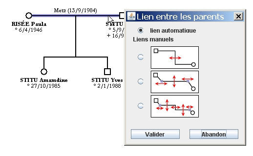
|
|
Vous pouvez aussi modifier le lien familial (entre les parents et les enfants) en faisant un clic
droit et en choisissant une option de présentation.
Vous avez le choix entre :
|
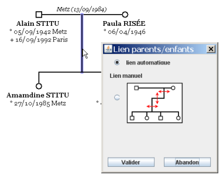
|
Fonctionnement général 
Certaines parties des liens sont modifiables manuellement.
Il suffit de cliquer sur un segment de droite ou sur un point pour le déplacer. Quand vous déplacez une personne,
le lien conserve ses proportions. Quand vous déplacez une personne, les points conservent la position qu'ils ont
par rapport à la personne la plus proche.
Le lieu et la date de l'union se positionnent toujours à mi-distance des deux parents et au-dessus du lien.
Lien de l'union automatique
Ce lien se détermine automatiquement à partir des deux parents. Le trait vertical est toujours à mi-distance des
deux parents.
Lien de l'union 1
Par rapport au lien automatique, ce lien permet de positionner manuellement le segment vertical. Exemples :
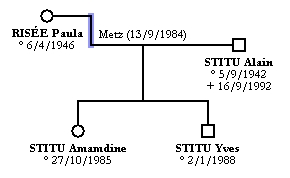 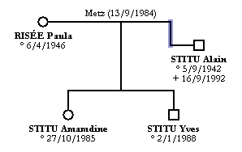
Lien de l'union 2
Vous pouvez placer le segment horizontal où vous voulez, au-dessus du parent le plus haut, entre les parents ou
en dessous du parent le plus bas. De plus, vous pouvez déplacer les deux points entre segment horizontal et
segment vertical afin que le segment qui part du parent soit oblique. Exemples :
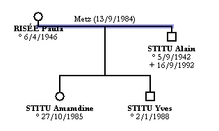
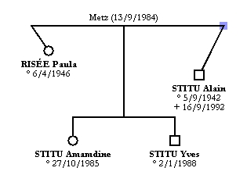
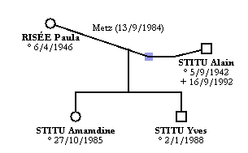
Lien de l'union 3
Ce lien est celui qui offre le plus de possibilités de modifications. Vous pouvez déplacer trois segments et deux points. Exemples :
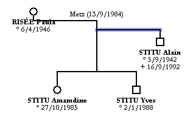
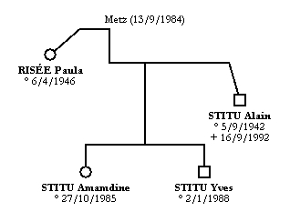
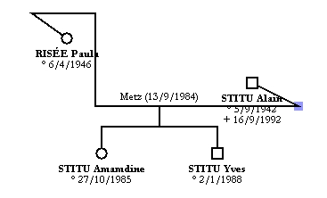
Lien familial automatique
Ce lien se détermine automatiquement à partir de la famille.
Lien familial manuel
Vous pouvez déplacer les 3 segments suivant vos envies. Le logiciel limite certains mouvements pour que :
- le segment vertical qui relie le lien de l'union reste entre les deux parents ;
- le segment vertical qui relie la fratrie reste entre les enfants les plus extrêmes.
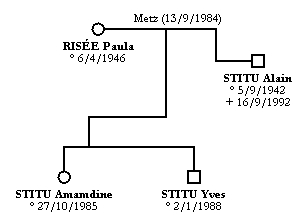
Les exemples qui figurent sur cette page ne sont pas forcément à reproduire, ils servent à illustrer les
possibiltés du logiciel.